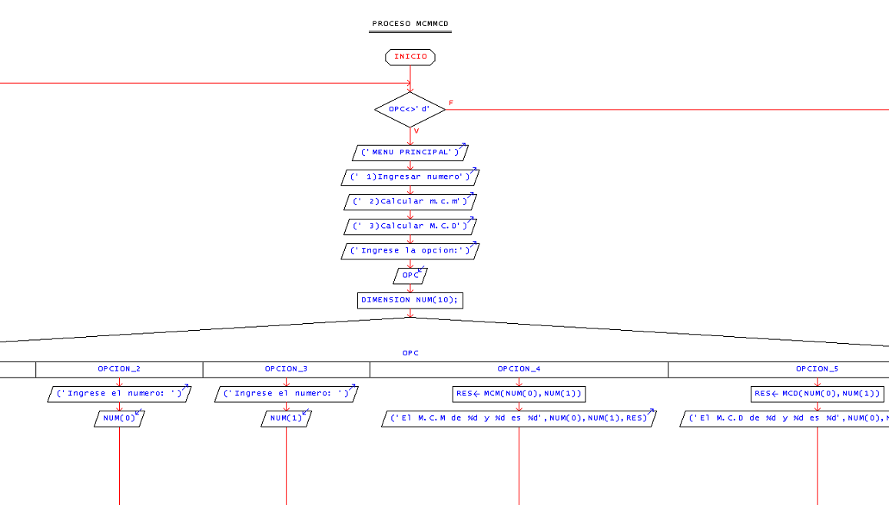
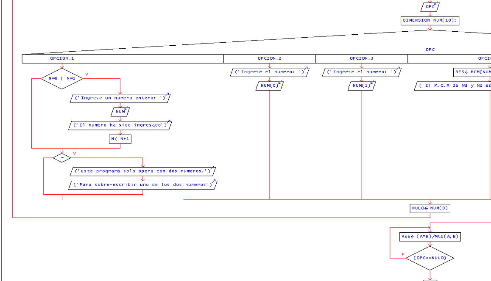
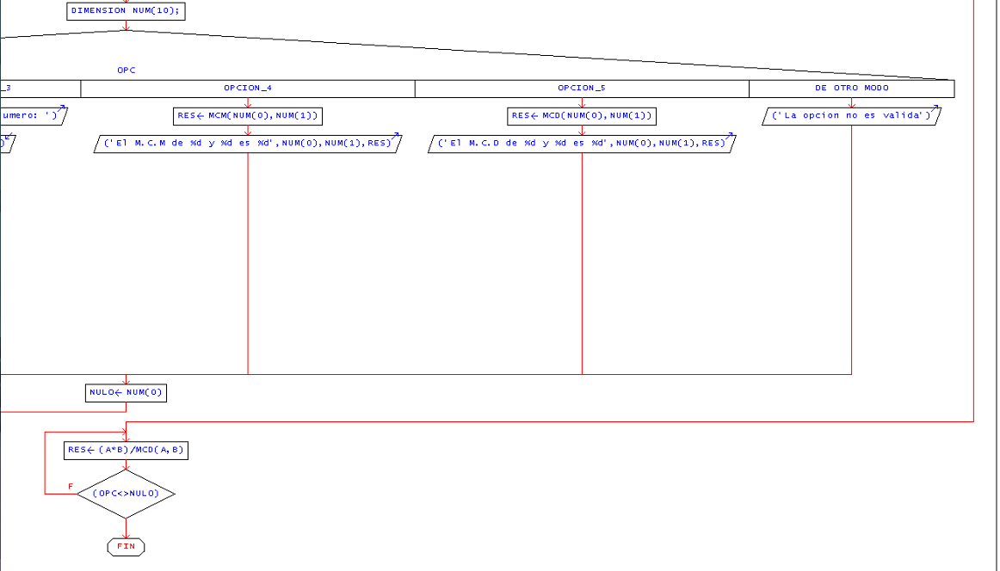
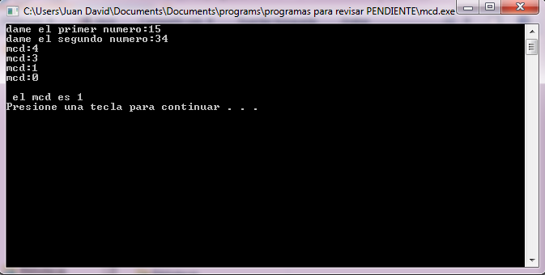

Se pretende encontrar el m.c.m. y el m.c.d. dependiendo la desicion del usuario mediante un switch
de dos numeros dados por el usuario'.
Pseudocódigo
Proceso McmMcd
Mientras opc <> 'd' Hacer
Escribir ("MENU PRINCIPAL");
Escribir (" 1)Ingresar numero");
Escribir (" 2)Calcular m.c.m");
Escribir (" 3)Calcular M.C.D");
Escribir ("Ingrese la opcion:");
Leer opc;
Dimension num[10];
Segun opc Hacer
opcion_1:
si n = 0 | n = 1 Entonces
Escribir ("Ingrese un numero entero: ");
Leer num;
Escribir ("El numero ha sido ingresado");
n<-n+1;
FinSi
si no Entonces
Escribir ("Este programa solo opera con dos numeros." );
Escribir ("Para sobre-escribir uno de los dos numeros" );
FinSi
opcion_2:
Escribir ("Ingrese el numero: ");
Leer num[0];
Opcion_3:
Escribir ("Ingrese el numero: ");
Leer num[1];
opcion_4:
res <- mcm(num[0], num[1]);
Escribir ("El M.C.M de %d y %d es %d", num[0], num[1], res);
opcion_5:
res <- mcd(num[0], num[1]);
Escribir ("El M.C.D de %d y %d es %d", num[0], num[1], res);
De otro modo:
Escribir ("La opcion no es valida");
FinSegun
nulo<- num[0];
FinMientras
Repetir
res <- (a*b)/mcd(a,b);
Hasta Que (opc<> nulo)
FinProceso
Diagrama de Flujo



Código en Lenguaje C
Este programa muestra la suma de todos los numeros enteros pares que hay del 1-100.
#include<stdio.h>
int mcd (int,int);//declaracion de la funcion mcd
int mcm (int,int);//declaracion de la funcion mcm
int main (void)
{
int num[2],n=0,res;
char opc=1;
int cmb;
while(opc!= 'd') //inicia el ciclo while
{
printf("\n" );
printf("\n" );
printf(" MENU PRINCIPAL \n\n" );
printf(" a)Ingresar numero\n" );
printf(" b)Calcular m.c.m\n" );
printf(" c)Calcular m.c.d\n" );
printf(" d)Finalizar\n\n" );
printf(" Ingrese la opcion: " );
scanf("%c", &opc);
switch (opc)//para ejecutar la opción introducida
{
case 'a':
if (n==0||n==1)
{
printf("\nIngrese un numero entero: " );
scanf("%d", &num[n]);
printf("El numero ha sido ingreasdo" );
n++;
}
else //si el usuario introduce dos o más veces alguna opcion
{
printf("\nEste programa solo opera con\ndos numeros.\n" );
printf("Para sobre-escribir uno de los dos numeros\n" );
printf("Ingrese la ubicacion del numero a cambiar\n" );
printf("o 3 para salir\n" );
printf("1: %d 2: %d ::",num[0],num[1]);
scanf("%d",&cmb);
switch (cmb) //reescribe el numero en la memoria
{
case 1:
printf("Ingrese el numero: " );
scanf("%d",&num[0]);
break;
case 2:
printf("Ingrese el numero: " );
scanf("%d",&num[1]);
break;
case 3:
break;
default:
break;
}
}
break;
case 'b':
res=mcm(num[0],num[1]); //llama la funcion mcm
printf("\nEl M.C.M de %d y %d es %d \n", num[0], num[1], res);
break;
case 'c':
res=mcd(num[0],num[1]); //llama la funcion mcd
printf("\nEl M.C.D de %d y %d es %d \n", num[0], num[1], res);
break;
case 'd': //cierrra el programa
continue;
break;
default:
printf("\nla opcion no es valida\n" );
break;
}
while ((opc=getchar())!='\n');//limpiar el buffer
}
return 0;
}
int mcd (a,b)
{
int res, n = 1;
while(n<=a&&n<=b)//cicla para el m.c.d
{
while(a%n==0&&b%n==0)
{
res=n;
n++;
}
n++;
}
return res;//regresa el m.c.d
}
int mcm (a,b)
{
int res;
res = (a*b)/mcd(a,b);//formula para obtener m.c.m
return res;//regresa el m.c.m
}
Salida del programa
